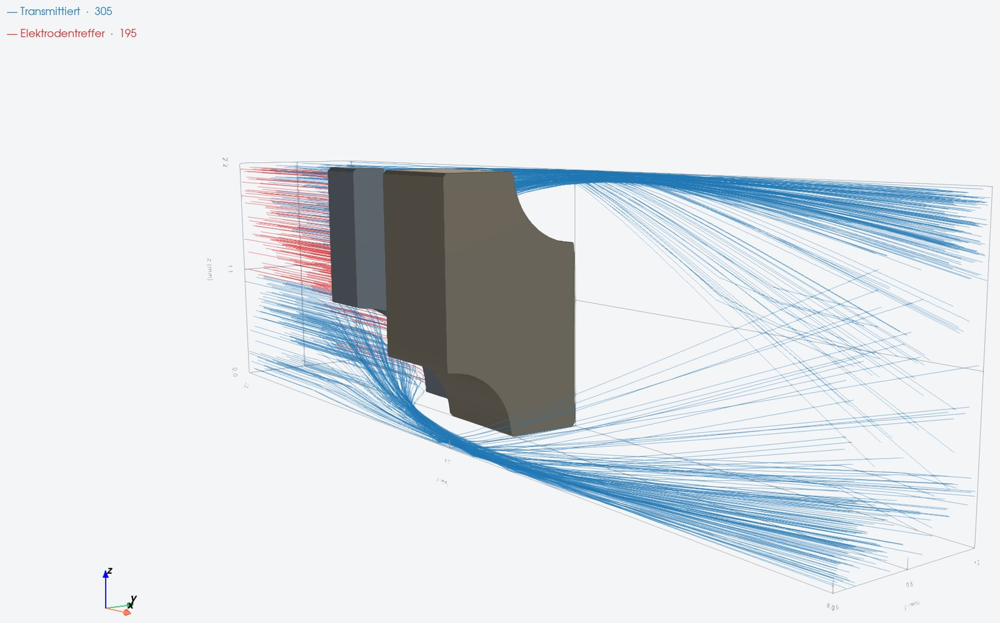
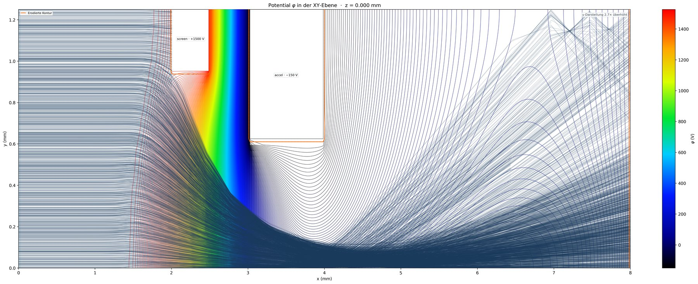
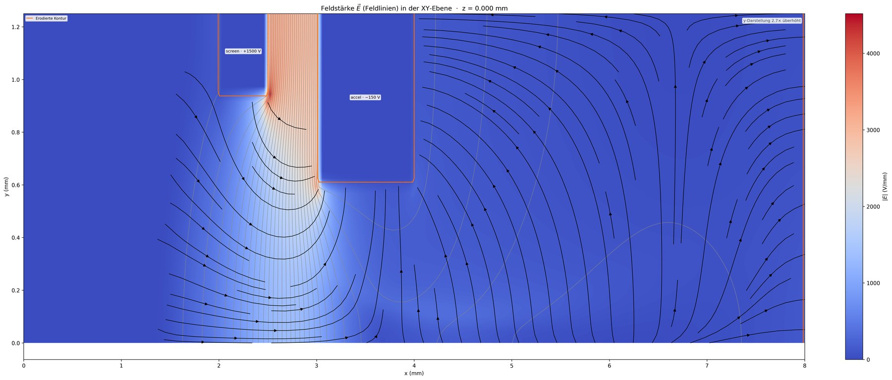
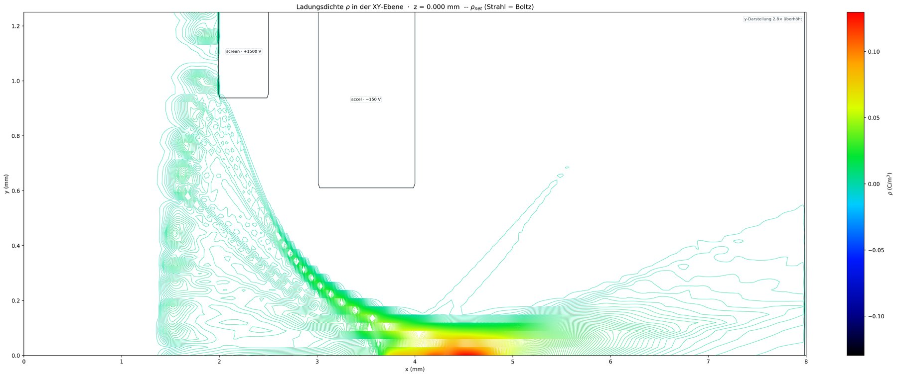
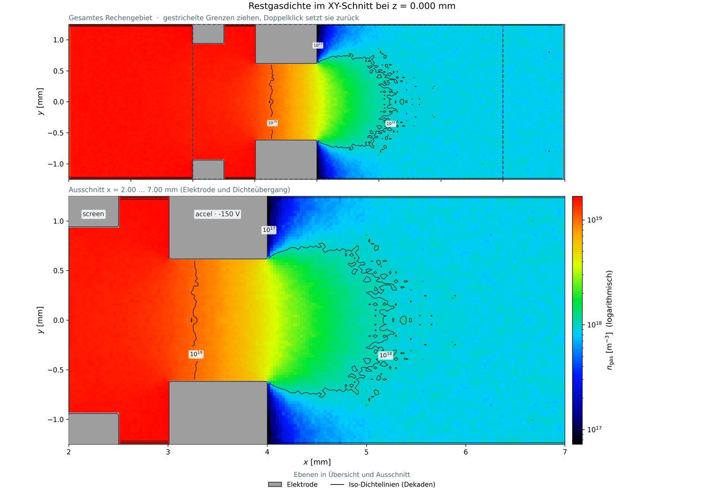
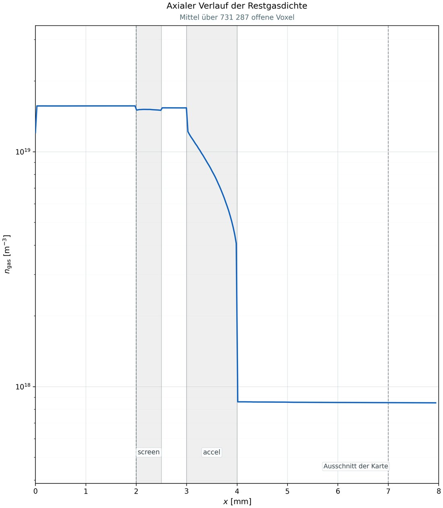
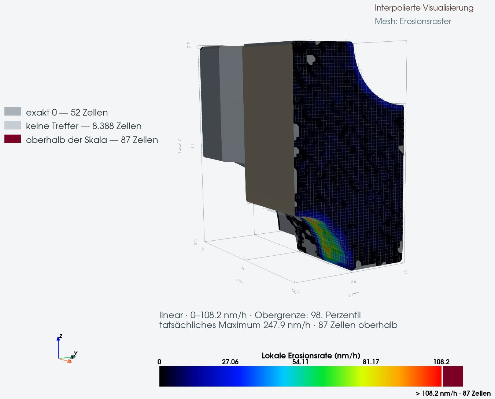
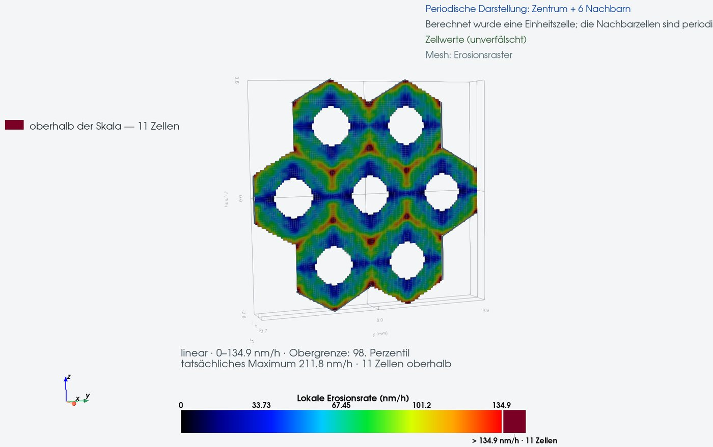

Wozu IONTRACE?
Die Extraktionsoptik bestimmt maßgeblich den Strahlstrom, die Strahlform und die Lebensdauer der Gitter. Diese Größen sind eng miteinander gekoppelt: Die Raumladung beeinflusst das elektrische Feld und damit die Ionenbahnen. Durch Ladungsaustauschstöße zwischen Strahlionen und dem neutralen Hintergrundgas entstehen langsame Ionen, die zu den Gittern beschleunigt werden und dort Erosion verursachen können. Die fortschreitende Veränderung der Gittergeometrie wirkt sich wiederum auf das elektrische Feld und den extrahierten Ionenstrahl aus.
IONTRACE bildet diese Wechselwirkungen in einer gekoppelten dreidimensionalen Simulation ab. Dabei werden die tatsächliche Gitter- und Aperturgeometrie sowie deren Veränderung über die Betriebsdauer berücksichtigt.

Was der Code rechnet
IONTRACE geht über die reine Berechnung von Ionenbahnen hinaus: Elektrisches Feld, Raumladung, Neutralgashintergrund, Ladungsaustausch und Elektrodenerosion können in einer gekoppelten Simulation berücksichtigt werden. Die benötigten Modelle lassen sich je nach Aufgabenstellung einzeln aktivieren.
- Plasma und Ionenemission – verschiedene Modelle von der selbstkonsistenten Plasmaextraktion mit Boltzmann-Elektronen bis zur Berechnung vorgegebener Ionenemitter und Anfangsverteilungen.
- Elektrostatische Feldberechnung – Lösung der Poisson-Gleichung mit Raumladung und nichtlinearen Plasmarandbedingungen. Für die linearen Gleichungssysteme stehen Mehrgitter-, SOR- und direkte Verfahren zur Verfügung.
- Gekoppelte Teilchenrechnung – Ionenbahnen und Raumladungsdichte werden iterativ mit dem elektrischen Feld gekoppelt.
- Gekrümmte Elektrodenoberflächen – wahlweise klassische Treppendarstellung oder Teilzellenkorrektur nach Shortley–Weller zur genaueren Abbildung gekrümmter Grenzflächen.
- Symmetrien und mehrere Aperturen – Spiegelrandbedingungen ermöglichen reduzierte Rechengebiete. Auch Geometrien mit mehreren Aperturen können in einem gemeinsamen Rechengebiet untersucht werden.
- Geometrieerstellung – parametrischer Aufbau aus geometrischen Grundkörpern sowie ein lesbares, textbasiertes und versionierbares Dateiformat.
- Neutralgas – Testteilchen-Monte-Carlo-Simulation der räumlichen Neutralgasverteilung innerhalb der Elektrodengeometrie.
- Ladungsaustausch – Erzeugung und Verfolgung von Ladungsaustauschionen auf Grundlage des Ionenstrahls und der berechneten Neutralgasverteilung. Entstehungsorte und Elektrodenauftreffpunkte können räumlich ausgewertet werden.
- Erosion und Lebensdauer – Berechnung des material- und energieabhängigen Elektrodenabtrags mit räumlich aufgelösten Auftreff- und Erosionsdaten. Die veränderte Geometrie kann in nachfolgenden Simulationsschritten berücksichtigt werden.
- Visualisierung und Auswertung – integrierte 3D-Darstellung, Konvergenz- und Fortschrittsanzeige sowie Export von Simulations- und Auswertungsdaten.
Felder und Bahnen
Alle Schnitte stammen aus demselben Lauf einer Zweigitteroptik: Screen-Gitter auf +1500 V, Beschleunigungsgitter auf -150 V.



Restgas
Wo Ladungsaustauschionen entstehen, hängt vom räumlichen Zusammentreffen des Ionenstrahls mit dem Neutralgas ab. Das elektrische Feld bestimmt anschließend ihre Bahnen und Auftreffenergien; daraus ergibt sich zusammen mit den Materialeigenschaften die räumliche Verteilung des Elektrodenabtrags.


Erosion und Lebensdauer
Aus der räumlichen Verteilung der Ionenauftreffraten, ihren Energien und Einfallswinkeln sowie der materialabhängigen Sputterausbeute wird die lokale Abtragsrate berechnet. Durch die zeitliche Fortschreibung der Gittergeometrie lässt sich deren Entwicklung über die Betriebsdauer untersuchen und die Lebensdauer abschätzen.


Nachweise
Der Code wird gegen analytische Lösungen und gegen etablierte Programme geprüft.
- Analytische Verifikation – Vergleich des elektrostatischen Feldlösers mit der exakten Lösung für einen Plattenkondensator.
- Netzkonvergenz – Untersuchung der Lösung auf zunehmend feineren Rechengittern und Vergleich der klassischen Treppendarstellung mit der Teilzellenbehandlung nach Shortley–Weller.
- Vergleich mit KOBRA – Gegenüberstellung von Feld-, Strahl- und Stromgrößen unter möglichst vergleichbaren Randbedingungen. Unterschiede werden unter Berücksichtigung der jeweiligen Plasma- und Emissionsmodelle bewertet.
- Prüfung der Erosionsrechnung – definierte Testfälle für die Verarbeitung von Ionenauftreffern, die Berechnung des Materialabtrags und die schrittweise Aktualisierung der Geometrie.
- Verifikation der Neutralgasrechnung – Vergleich der berechneten Transmission durch eine zylindrische Apertur mit dem entsprechenden Clausing-Faktor im molekularen Strömungsbereich.
Download
IONTRACE wird über ein Installationsprogramm für Windows bereitgestellt. Die Installation erfolgt benutzerspezifisch und erfordert in der Regel keine Administratorrechte. Das Installationspaket ist passwortgeschützt; das zugehörige Passwort wird beim Start der Installation abgefragt.
- Version
- 1.0.0-beta
- Betriebssystem
- Windows 10 / 11, 64 Bit
- Datei
- IONTRACE-Setup-1.0.0-beta.exe
- Größe
- 179 MB
- SHA-256
- 2ce1de976449715983359062a82f2b79b56d29675745dc266d3f15c4adc528bb
- Herausgeber
- PlasmaTrace – Dr. Kristof Holste
Installationspasswort erforderlich. Die Installationsdatei ist frei zugänglich, ihr Inhalt jedoch passwortgeschützt. Das Passwort erhalten Sie auf Anfrage per E-Mail an Kristof.Holste@physik.jlug.de . Bitte nennen Sie dabei kurz den vorgesehenen Einsatz von IONTRACE.
Hinweis zur Windows-Installation. Das Installationsprogramm ist derzeit nicht digital signiert. Windows kann deshalb beim Start eine Warnung über einen unbekannten Herausgeber anzeigen. Nach Auswahl von „Weitere Informationen“ kann die Installation über „Trotzdem ausführen“ fortgesetzt werden.
Dateiintegrität prüfen.
Vergleichen Sie vor der Installation die SHA-256-Prüfsumme der heruntergeladenen
Datei mit der auf dieser Seite angegebenen Prüfsumme. Unter PowerShell verwenden
Sie dazu:
Get-FileHash .\IONTRACE-Setup-1.0.0-beta.exe -Algorithm SHA256